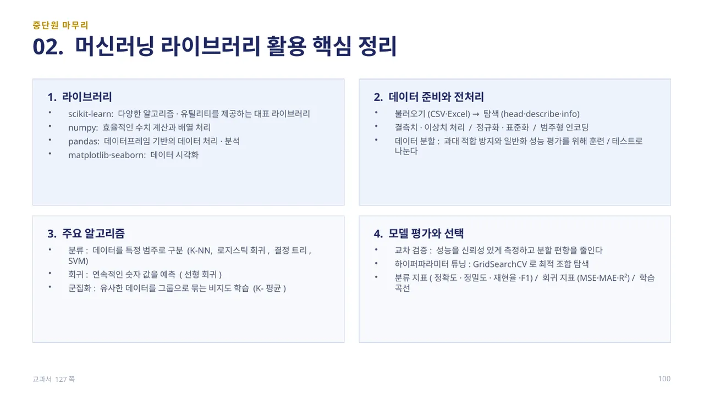
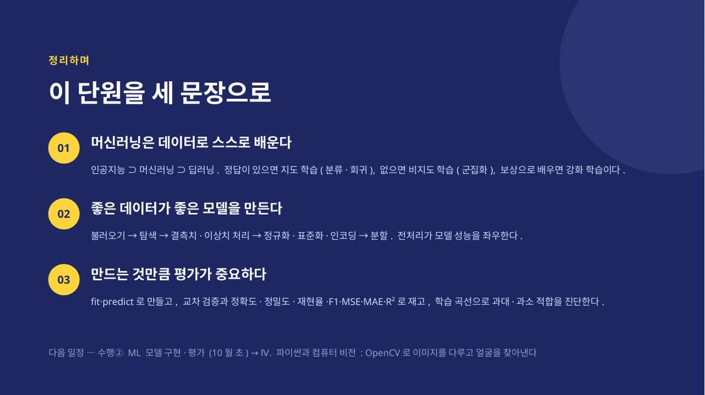

탐구 활동(126쪽): Iris 데이터 세트로 분류 모델을 구축하고, 혼동 행렬·정확도·정밀도·재현율·F1 점수를 계산합니다. 이어서 학습 곡선을 그려 과대 적합·과소 적합 여부를 진단하고 그 의미를 해석합니다. 이 흐름(모델 구축 → 지표 계산 → 진단·해석)이 곧 수행②의 채점 흐름과 같습니다.
수행② — ML 모델 구현·평가 미니 프로젝트(20점): 데이터셋 선택·구성 확인 → 전처리 2가지 이상 → 모델 1개 이상 학습 → 평가 지표 2개 이상 산출 → 해석·개선 방안 서술의 순서로 진행합니다. 붓꽃 대신 breast_cancer, diabetes 등 자기가 고른 데이터셋으로 바꾸면 그대로 수행②의 결과물이 됩니다. 배점은 전처리·모델 구현 10점, 지표 해석·결과 분석 5점, 저널 5점이며, 소스코드·결과 보고서·학습 저널을 제출합니다. (교과서 126쪽)

중단원 마무리 — 02. 머신러닝 라이브러리 활용: scikit-learn은 다양한 알고리즘·유틸리티를 제공하는 대표 라이브러리, numpy는 효율적인 수치 계산과 배열 처리, pandas는 데이터프레임 기반의 데이터 처리·분석, matplotlib·seaborn은 데이터 시각화를 담당합니다. 전처리는 불러오기(CSV·Excel) → 탐색(head·describe·info) → 결측치·이상치 처리 / 정규화·표준화 / 범주형 인코딩 → 데이터 분할의 순서입니다.
주요 알고리즘으로 분류(K-NN, 로지스틱 회귀, 결정 트리, SVM), 회귀(선형 회귀), 군집화(K-평균, 비지도 학습)를 배웠습니다. 모델 평가와 선택에서는 교차 검증으로 신뢰성 있게 성능을 측정하고, GridSearchCV로 하이퍼파라미터를 튜닝하며, 분류 지표(정확도·정밀도·재현율·F1)·회귀 지표(MSE·MAE·R²)·학습 곡선으로 모델을 진단합니다. (교과서 127쪽)

이 단원을 세 문장으로 정리하면 — ①머신러닝은 데이터로 스스로 배운다: 인공지능 ⊃ 머신러닝 ⊃ 딥러닝이고, 정답이 있으면 지도 학습(분류·회귀), 없으면 비지도 학습(군집화), 보상으로 배우면 강화 학습입니다. ②좋은 데이터가 좋은 모델을 만든다: 불러오기 → 탐색 → 결측치·이상치 처리 → 정규화·표준화·인코딩 → 분할의 전처리가 모델 성능을 좌우합니다.
③만드는 것만큼 평가가 중요하다: fit·predict로 만들고, 교차 검증과 정확도·정밀도·재현율·F1·MSE·MAE·R²로 재고, 학습 곡선으로 과대·과소 적합을 진단합니다. 다음 일정은 수행②(ML 모델 구현·평가, 10월 초)이며, 이어서 Ⅳ단원에서는 OpenCV로 이미지를 다루고 얼굴을 찾아냅니다.
 인공지능 파이썬 실무
인공지능 파이썬 실무